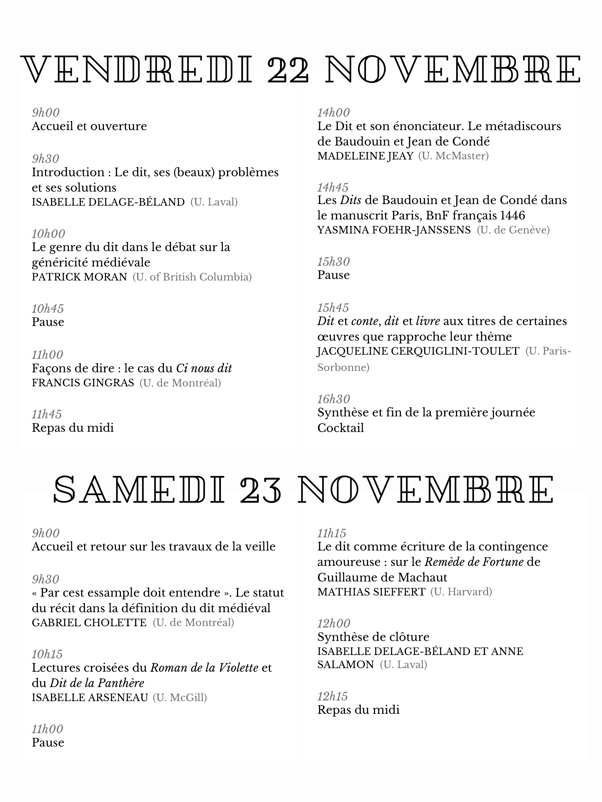

Colloque

Affiche réalisée par Raphaëlle Décloître.
Informations utiles
Le colloque se déroulera les 22 et 23 novembre 2019 dans la salle DKN-5242 (5e étage) l’Institut d’études anciennes et médiévales de l’Université Laval (IÉAM).
Adresse
Pavillon Charles-De Koninck 1030 Avenue des Sciences Humaines Université Laval Québec (Québec) G1V 0A6
Pour se rendre à l'Institut d'études anciennes et médiévales se rendre au 5e étage; prendre à gauche en sortant de l'ascenseur ou tourner à droite dans le hall Emile-Nelligan depuis les escaliers.

Adresses utiles pendant le colloque
- Le Manoir d’Auteuil, 49 Rue d’Auteuil, G1R 4C2; 1 866 662-6647
- Le Cercle Universitaire, où aura lieu le repas du midi du vendredi 22 novembre: Pavillon Alphonse Desjardins, Université Laval, local 4516 (4e étage), 2305 Rue de l’Université, G1V 0A6; 418 208-0630
- Le Tournebroche, où aura lieu le repas du soir du vendredi 22 novembre (19h30): 1190 Rue Saint-Jean, G1R 1S6; 418 692-5524
- Pizzéria No 900, où aura lieu le repas du midi du samedi 23 novembre: 1332 Avenue Maguire, G1T 1Z3; 581 742-5900
Déplacements
Transport en commun
RTC : Réseau de Transport de la Capitale
Les lignes 800 et 801 (Métrobus) proposent des bus à haute fréquence et vous permettent d’accéder facilement aux principaux pôles d’activité de la ville. Un passage payé en argent comptant coûte 3,50 $ CAD.
La grille tarifaire complète, les horaires et les trajets se trouvent en ligne : https://www.rtcquebec.ca/
Taxi
- Taxi Laurier : 418 651-2727
- Taxi Coop Québec : 418 525-5191